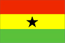

{kind=link}


![[Country map of Ghana]](../maps/gh-map.jpg)
| Ghana |  |
|
| | |
| Introduction |
Background: Formed from the merger of the British colony of the Gold Coast and the Togoland trust territory, Ghana in 1957 became the first country in colonial Africa to gain its independence. A long series of coups resulted in the suspension of the constitution in 1981 and the banning of political parties. A new constitution, restoring multiparty politics, was approved in 1992.
| Geography |
Location: Western Africa, bordering the Gulf of Guinea, between Cote d'Ivoire and Togo
Geographic coordinates: 8 00 N, 2 00 W
Map references: Africa
Area:
total:
238,540 sq km
land:
230,020 sq km
water:
8,520 sq km
Area - comparative: slightly smaller than Oregon
Land boundaries:
total:
2,093 km
border countries:
Burkina Faso 548 km, Cote d'Ivoire 668 km, Togo 877 km
Coastline: 539 km
Maritime claims:
contiguous zone:
24 nm
continental shelf:
200 nm
exclusive economic zone:
200 nm
territorial sea:
12 nm
Climate: tropical; warm and comparatively dry along southeast coast; hot and humid in southwest; hot and dry in north
Terrain: mostly low plains with dissected plateau in south-central area
Elevation extremes:
lowest point:
Atlantic Ocean 0 m
highest point:
Mount Afadjato 880 m
Natural resources: gold, timber, industrial diamonds, bauxite, manganese, fish, rubber, hydropower
Land use:
arable land:
12%
permanent crops:
7%
permanent pastures:
22%
forests and woodland:
35%
other:
24% (1993 est.)
Irrigated land: 60 sq km (1993 est.)
Natural hazards: dry, dusty, harmattan winds occur from January to March; droughts
Environment - current issues: recent drought in north severely affecting agricultural activities; deforestation; overgrazing; soil erosion; poaching and habitat destruction threatens wildlife populations; water pollution; inadequate supplies of potable water
Environment - international agreements:
party to:
Biodiversity, Climate Change, Desertification, Endangered Species, Environmental Modification, Law of the Sea, Nuclear Test Ban, Ozone Layer Protection, Ship Pollution, Tropical Timber 83, Tropical Timber 94, Wetlands
signed, but not ratified:
Marine Life Conservation
Geography - note: Lake Volta is the world's largest artificial lake; northeasterly harmattan wind (January to March)
| People |
Population:
19,533,560
note:
estimates for this country explicitly take into account the effects of excess mortality due to AIDS; this can result in lower life expectancy, higher infant mortality and death rates, lower population and growth rates, and changes in the distribution of population by age and sex than would otherwise be expected (July 2000 est.)
Age structure:
0-14 years:
42% (male 4,120,240; female 4,063,960)
15-64 years:
55% (male 5,290,675; female 5,391,175)
65 years and over:
3% (male 318,890; female 348,620) (2000 est.)
Population growth rate: 1.87% (2000 est.)
Birth rate: 29.81 births/1,000 population (2000 est.)
Death rate: 10.22 deaths/1,000 population (2000 est.)
Net migration rate: -0.89 migrant(s)/1,000 population (2000 est.)
Sex ratio:
at birth:
1.03 male(s)/female
under 15 years:
1.01 male(s)/female
15-64 years:
0.98 male(s)/female
65 years and over:
0.91 male(s)/female
total population:
0.99 male(s)/female (2000 est.)
Infant mortality rate: 57.43 deaths/1,000 live births (2000 est.)
Life expectancy at birth:
total population:
57.42 years
male:
56.07 years
female:
58.82 years (2000 est.)
Total fertility rate: 3.95 children born/woman (2000 est.)
Nationality:
noun:
Ghanaian(s)
adjective:
Ghanaian
Ethnic groups: black African 99.8% (major tribes - Akan 44%, Moshi-Dagomba 16%, Ewe 13%, Ga 8%), European and other 0.2%
Religions: indigenous beliefs 38%, Muslim 30%, Christian 24%, other 8%
Languages: English (official), African languages (including Akan, Moshi-Dagomba, Ewe, and Ga)
Literacy:
definition:
age 15 and over can read and write
total population:
64.5%
male:
75.9%
female:
53.5% (1995 est.)
| Government |
Country name:
conventional long form:
Republic of Ghana
conventional short form:
Ghana
former:
Gold Coast
Data code: GH
Government type: constitutional democracy
Capital: Accra
Administrative divisions: 10 regions; Ashanti, Brong-Ahafo, Central, Eastern, Greater Accra, Northern, Upper East, Upper West, Volta, Western
Independence: 6 March 1957 (from UK)
National holiday: Independence Day, 6 March (1957)
Constitution: new constitution approved 28 April 1992
Legal system: based on English common law and customary law; has not accepted compulsory ICJ jurisdiction
Suffrage: 18 years of age; universal
Executive branch:
chief of state:
President Jerry John RAWLINGS (since 7 January 1993); Vice President John Evans Atta MILLS (since 7 January 1993); note - the president is both the chief of state and head of government
head of government:
President Jerry John RAWLINGS (since 7 January 1993); Vice President John Evans Atta MILLS (since 7 January 1993); note - the president is both the chief of state and head of government
cabinet:
Council of Ministers; president nominates members subject to approval by Parliament
elections:
president and vice president elected on the same ticket by popular vote for four-year terms; election last held 7 December 1996 (next to be held NA December 2000)
election results:
Jerry John RAWLINGS reelected president; percent of vote - RAWLINGS 57.2%, John KUFUOR 39.8%
Legislative branch:
unicameral Parliament (200 seats; members are elected by direct popular vote to serve four-year terms)
elections:
last held 7 December 1996 (next to be held NA December 2000)
election results:
percent of vote by party - NA; seats by party - NDC 133, NPP 61, PCP 5, PNC 1
Judicial branch: Supreme Court
Political parties and leaders: Every Ghanaian Living Everywhere or EGLE [Owuraku AMOFA, chairman]; National Convention Party or NCP [Sarpong KUMA-KUMA]; National Democratic Congress or NDC [Dr. Huudu YAHAYA, general secretary]; New Patriotic Party or NPP [Peter Ala ADJETY]; People's Convention Party or PCP [P. K. DONKOH-AYIFI, acting chairman]; People's Heritage Party or PHP [Emmanuel Alexander ERSKINE]; People's National Convention or PNC [Edward MAHAMA]
International organization participation: ACP, AfDB, C, CCC, ECA, ECOWAS, FAO, G-24, G-77, IAEA, IBRD, ICAO, ICFTU, ICRM, IDA, IFAD, IFC, IFRCS, ILO, IMF, IMO, Inmarsat, Intelsat, Interpol, IOC, IOM (observer), ISO, ITU, MINURSO, NAM, OAS (observer), OAU, OPCW, UN, UNCTAD, UNESCO, UNIDO, UNIFIL, UNIKOM, UNMIBH, UNMIK, UNMOP, UNMOT, UNTAET, UNU, UPU, WCL, WFTU, WHO, WIPO, WMO, WToO, WTrO
Diplomatic representation in the US:
chief of mission:
Ambassador Kobena KOOMSON
chancery:
3512 International Drive NW, Washington, DC 20008
telephone:
[1] (202) 686-4520
FAX:
[1] (202) 686-4527
consulate(s) general:
New York
Diplomatic representation from the US:
chief of mission:
Ambassador Kathryn Dee ROBINSON
embassy:
Ring Road East, East of Danquah Circle, Accra
mailing address:
P. O. Box 194, Accra
telephone:
[233] (21) 775348
FAX:
[233] (21) 776008
Flag description: three equal horizontal bands of red (top), yellow, and green with a large black five-pointed star centered in the yellow band; uses the popular pan-African colors of Ethiopia; similar to the flag of Bolivia, which has a coat of arms centered in the yellow band
| Economy |
Economy - overview: Well endowed with natural resources, Ghana has twice the per capita output of the poorer countries in West Africa. Even so, Ghana remains heavily dependent on international financial and technical assistance. Gold, timber, and cocoa production are major sources of foreign exchange. The domestic economy continues to revolve around subsistence agriculture, which accounts for 40% of GDP and employs 60% of the work force, mainly small landholders. In 1995-97, Ghana made mixed progress under a three-year structural adjustment program in cooperation with the IMF. On the minus side, public sector wage increases and regional peacekeeping commitments have led to continued inflationary deficit financing, depreciation of the cedi, and rising public discontent with Ghana's austerity measures. A rebound in gold prices is likely to push growth over 5% in 2000-01.
GDP: purchasing power parity - $35.5 billion (1999 est.)
GDP - real growth rate: 4.3% (1999 est.)
GDP - per capita: purchasing power parity - $1,900 (1999 est.)
GDP - composition by sector:
agriculture:
40%
industry:
30%
services:
30% (1999 est.)
Population below poverty line: 31.4% (1992 est.)
Household income or consumption by percentage share:
lowest 10%:
3.4%
highest 10%:
27.3% (1992)
Inflation rate (consumer prices): 12.8% (1999 est.)
Labor force: 4 million
Labor force - by occupation: agriculture 60%, industry 15%, services 25% (1999 est.)
Unemployment rate: 20% (1997 est.)
Budget:
revenues:
$1.39 billion
expenditures:
$1.47 billion, including capital expenditures of $370 million (1996 est.)
Industries: mining, lumbering, light manufacturing, aluminum smelting, food processing
Industrial production growth rate: 4.2% (1996 est.)
Electricity - production: 6.206 billion kWh (1998)
Electricity - production by source:
fossil fuel:
0.1%
hydro:
99.9%
nuclear:
0%
other:
0% (1998)
Electricity - consumption: 5.437 billion kWh (1998)
Electricity - exports: 400 million kWh (1998)
Electricity - imports: 65 million kWh (1998)
Agriculture - products: cocoa, rice, coffee, cassava (tapioca), peanuts, corn, shea nuts, bananas; timber
Exports: $1.7 billion (f.o.b., 1999)
Exports - commodities: gold, cocoa, timber, tuna, bauxite, aluminum, manganese ore, diamonds
Exports - partners: Togo, UK, Italy, Netherlands, Germany, US, France (1998)
Imports: $2.5 billion (f.o.b., 1999)
Imports - commodities: capital equipment, petroleum, foodstuffs
Imports - partners: UK, Nigeria, US, Germany, Italy, Spain (1998)
Debt - external: $6 billion (1998 est.)
Economic aid - recipient: $477.3 million (1995)
Currency: 1 new cedi (C) = 100 pesewas
Exchange rates: new cedis per US$1 - 3,466.60 (December 1999), 2,647.32 (1999), 2,314.15 (1998), 2,050.17 (1997), 1,637.23 (1996), 1,200.43 (1995)
Fiscal year: calendar year
| Communications |
Telephones - main lines in use: 200,000 (1998 est.)
Telephones - mobile cellular: 30,000 (yearend 1998)
Telephone system:
poor to fair system; Internet accessible; many rural communities not yet connected; expansion of services is underway
domestic:
primarily microwave radio relay; wireless local loop has been installed
international:
satellite earth stations - 4 Intelsat (Atlantic Ocean); microwave radio relay link to Panaftel system connects Ghana to its neighbors
Radio broadcast stations: AM 0, FM 18, shortwave 3 (1999)
Radios: 4.4 million (1997)
Television broadcast stations: 11 (1999)
Televisions: 1.73 million (1997)
Internet Service Providers (ISPs): 2 (1999)
| Transportation |
Railways:
total:
953 km (undergoing major rehabilitation)
narrow gauge:
953 km 1.067-m gauge (32 km double track) (1997 est.)
Highways:
total:
39,409 km
paved:
11,653 km (including 30 km of expressways)
unpaved:
27,756 km (1997 est.)
Waterways: Volta, Ankobra, and Tano Rivers provide 168 km of perennial navigation for launches and lighters; Lake Volta provides 1,125 km of arterial and feeder waterways
Pipelines: 0 km
Ports and harbors: Takoradi, Tema
Merchant marine:
total:
6 ships (1,000 GRT or over) totaling 13,484 GRT/18,583 DWT
ships by type:
petroleum tanker 2, refrigerated cargo 4 (1999 est.)
Airports: 12 (1999 est.)
Airports - with paved runways:
total:
6
2,438 to 3,047 m:
1
1,524 to 2,437 m:
3
914 to 1,523 m:
2 (1999 est.)
Airports - with unpaved runways:
total:
6
1,524 to 2,437 m:
1
914 to 1,523 m:
3
under 914 m:
2 (1999 est.)
| Military |
Military branches: Army, Navy, Air Force, National Police Force, Palace Guard, Civil Defense
Military manpower - military age: 18 years of age
Military manpower - availability:
males age 15-49:
4,739,526 (2000 est.)
Military manpower - fit for military service:
males age 15-49:
2,629,954 (2000 est.)
Military manpower - reaching military age annually:
males:
196,549 (2000 est.)
Military expenditures - dollar figure: $53 million (FY99)
Military expenditures - percent of GDP: 0.7% (FY99)
| Transnational Issues |
Disputes - international: none
Illicit drugs: illicit producer of cannabis for the international drug trade; transit hub for Southwest and Southeast Asian heroin and South American cocaine destined for Europe and the US